Brief
Design an urban vehicle that blends minimalist engineering with technological intelligence and becomes a sleek lifestyle object, with effortless speed and practical storage for the city.
01 / BEV moped · Transportation design
An electric moped for the city that needs no big battery: its mast connects to the tram's overhead line and draws power straight from the existing network.
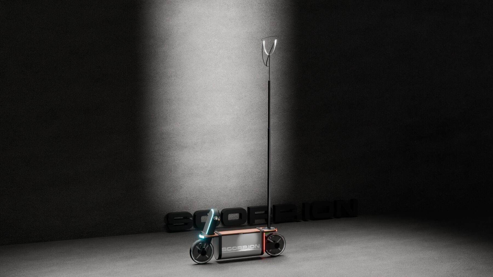
Design an urban vehicle that blends minimalist engineering with technological intelligence and becomes a sleek lifestyle object, with effortless speed and practical storage for the city.
"Combine the power of public transport with the freedom of individual mobility." Scorp.ion is my main project for the brief "Battery not included". Its guiding line: the most sustainable way to use a battery is not to use one at all.
Instead of a large battery, Scorp.ion connects to the tram's overhead line through its raised mast; a small buffer battery bridges the stretches without a line. The steel frame defines the whole design, and it gives the project its name: the scorpion returns as the logo on the handlebar switch and as the sculpture in the campaign renders.
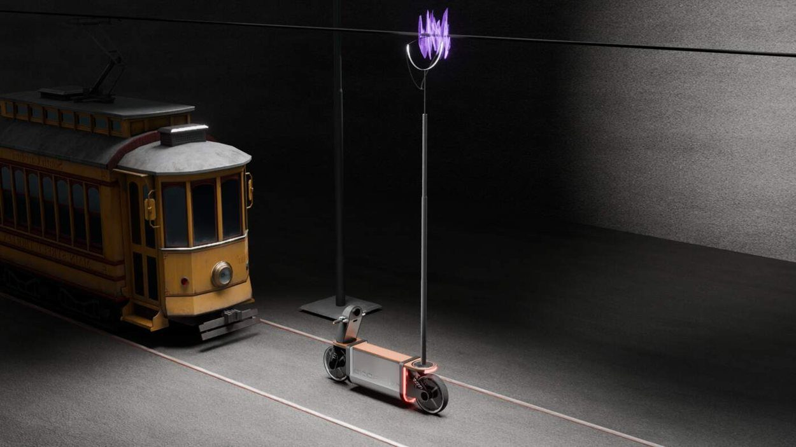
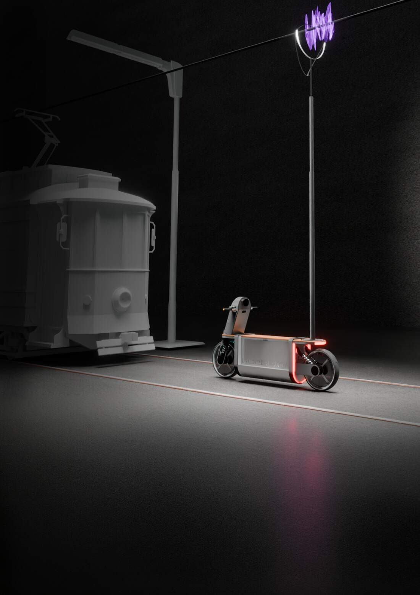


A cyan ring at the front, a red band around the rear wheel as brake light and amber bar-end indicators. The same platform takes different liveries, e.g. for Berlin's BVG or food couriers.
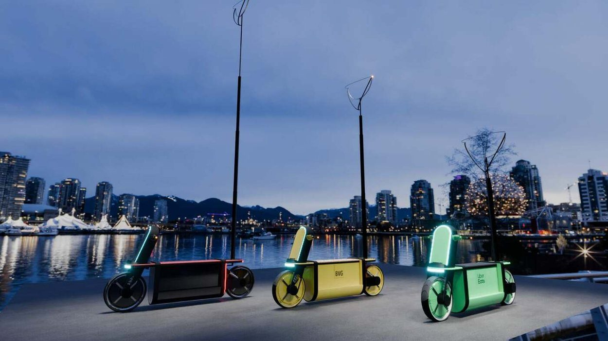

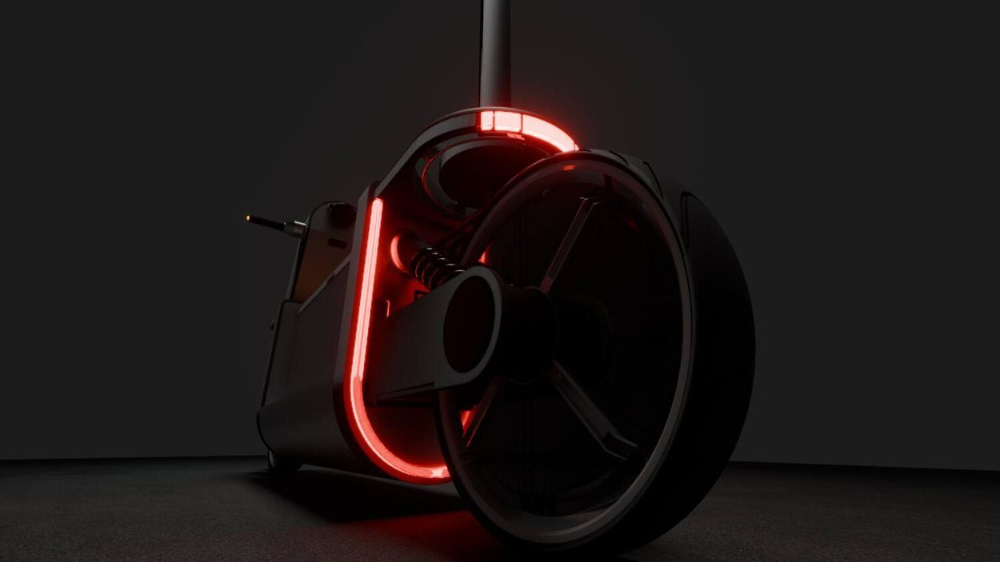
The raised mast sits in a lit ring at the end of the seat on a flexible mount: the inner ring tilts, so the mast can follow the line while the moped moves within its lane. On the handlebar, the switch carries the scorpion logo and a small round display shows speed and the charge of the buffer battery.
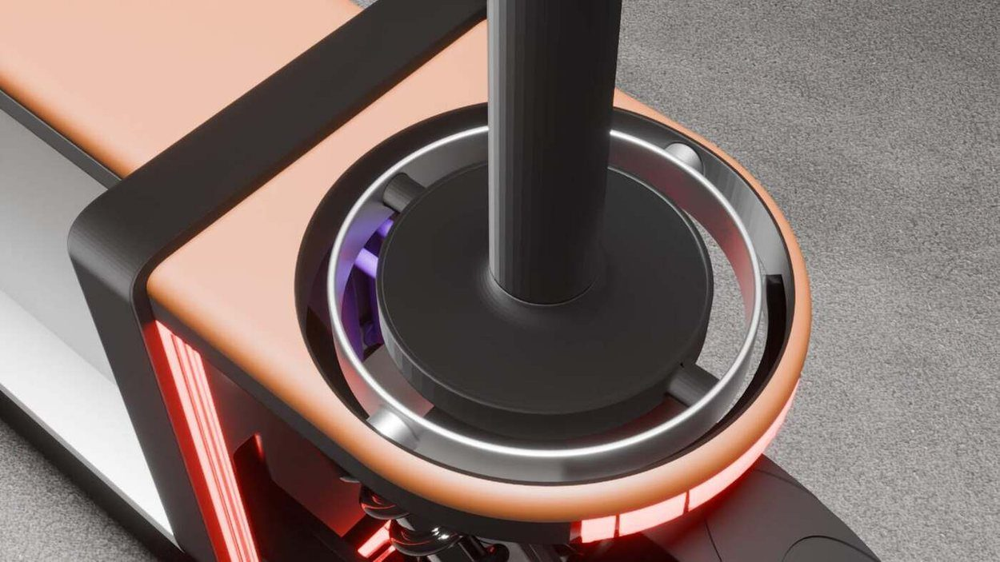

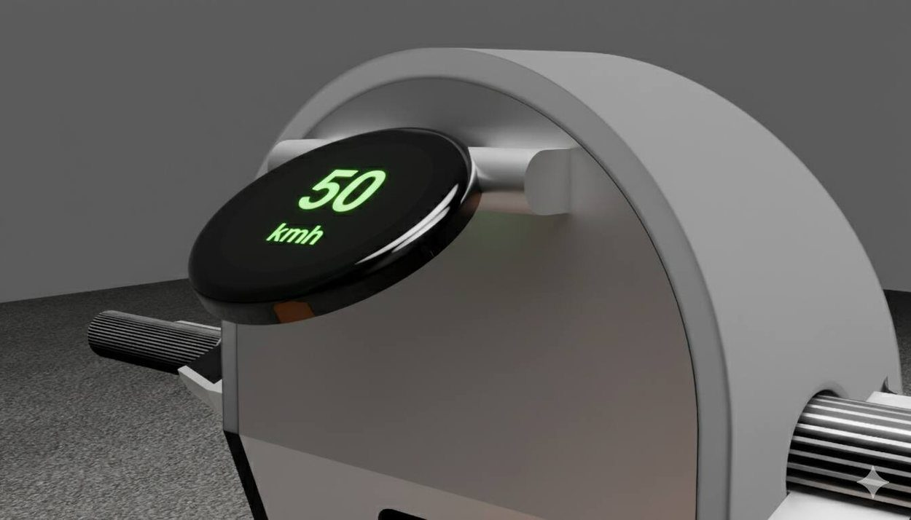
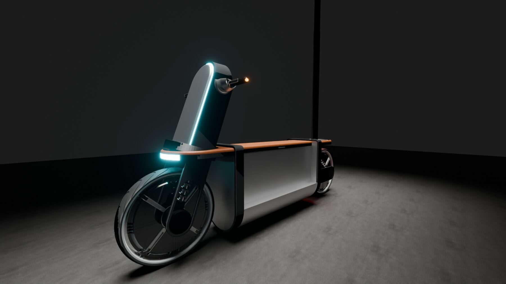
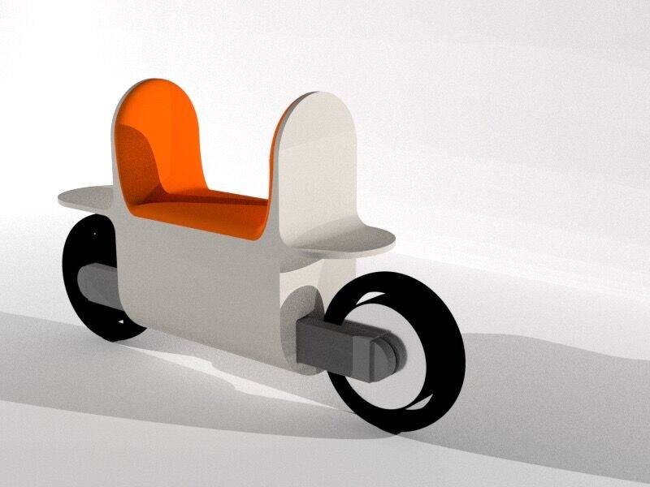
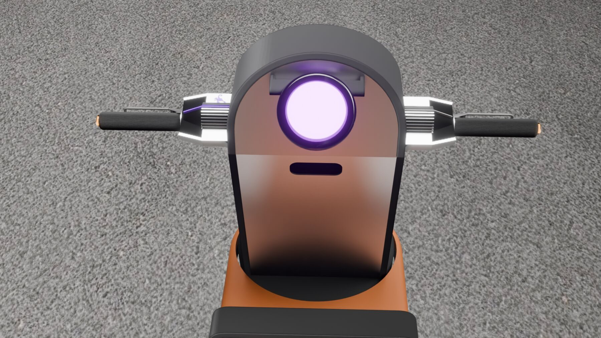


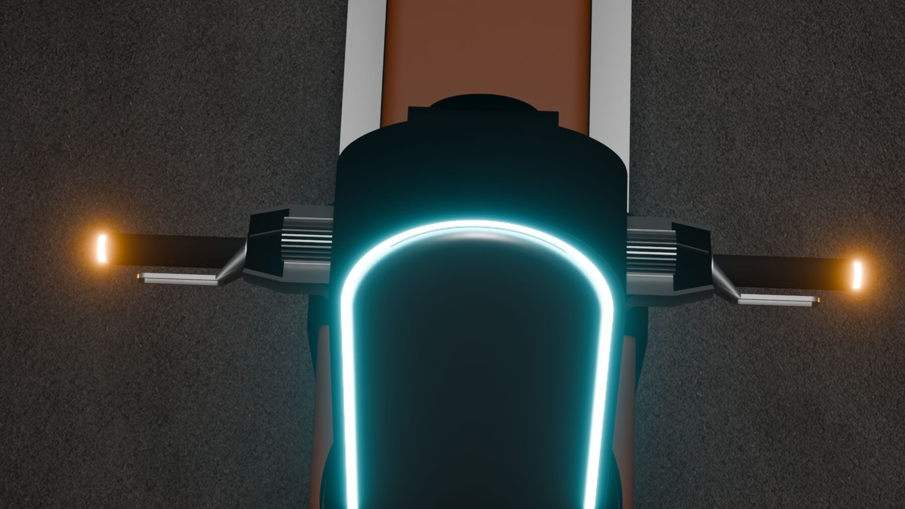
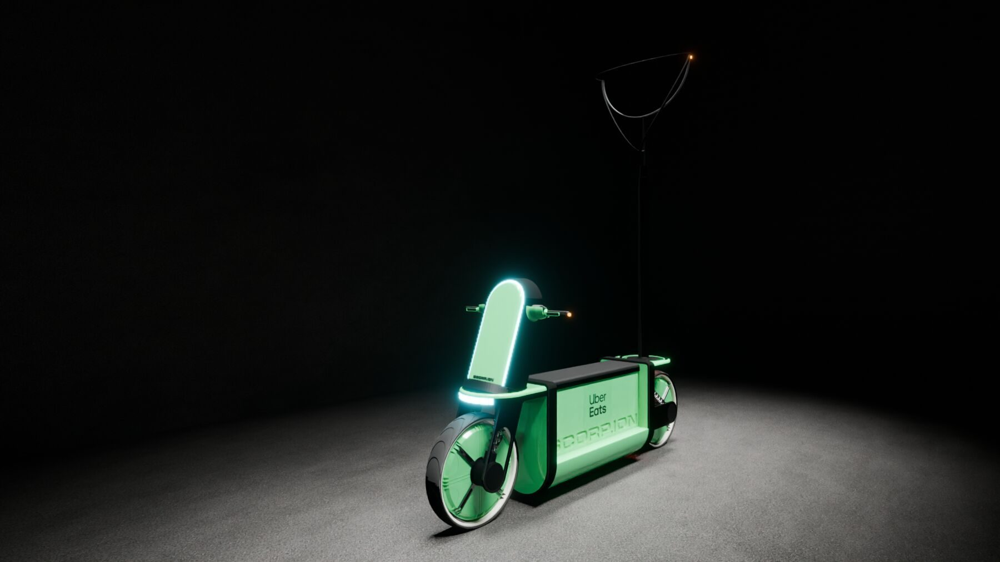

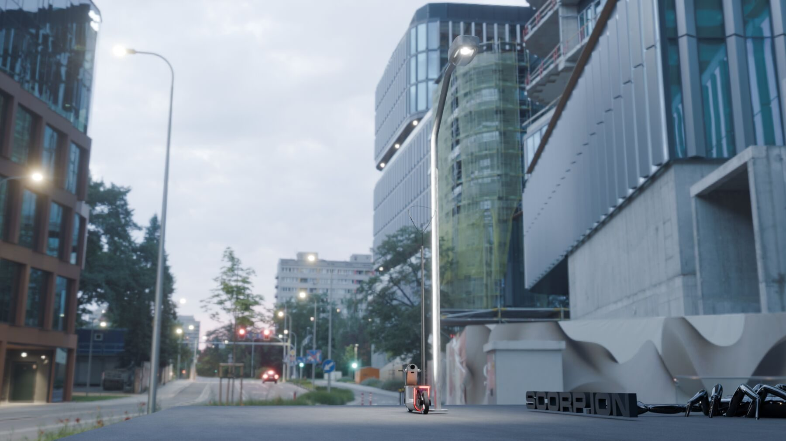